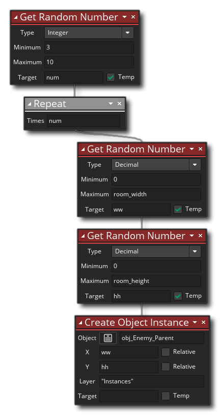

La description
Cette action va générer un nombre aléatoire dans les limites d'un ensemble de valeurs minimales et maximales. Vous pouvez choisir le type de nombre à générer (soit un nombre décimal ou un nombre entier), puis définir la plage du nombre à générer à l'intérieur en fournissant une valeur minimum et maximum. La valeur aléatoire générée sera renvoyée à la variable cible (qui peut être marquée comme variable locale temporaire).
NOTE: Lors de la génération d'un nombre entier aléatoire, l'action renverra une valeur entière comprise entre la valeur minimum et la valeur maximale inclusive, donc une plage de 5 à 10 peut retourner 5 ou 10 ainsi que n'importe quel entier entre. Cependant, la génération d'un nombre décimal aléatoire ne retournera jamais la valeur maximale, de sorte que la plage 5 à 10 peut renvoyer 5 mais ne renverra pas 10 (bien qu'elle puisse renvoyer 9,999999999999).
Syntaxe de l'action:

Arguments:
Argument La description Type Le type de nombres à utiliser (entier ou décimal) Minimum Le nombre minimum pour la plage aléatoire Maximum Le nombre maximum pour la plage aléatoire Target La variable cible pour stocker la valeur renvoyée
Exemple:
Le code de bloc d'action ci-dessus génère une valeur aléatoire et l'affecte à une variable locale temporaire. Cette valeur est ensuite utilisée dans une boucle de répétition où d'autres appels aléatoires sont effectués pour générer des positions dans la pièce. Ces positions sont ensuite utilisées pour créer un nombre d'instances.